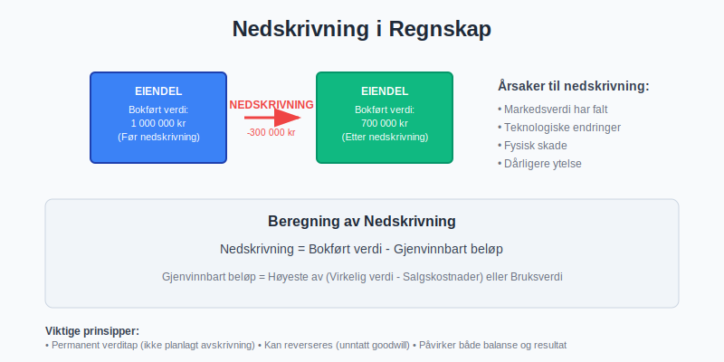
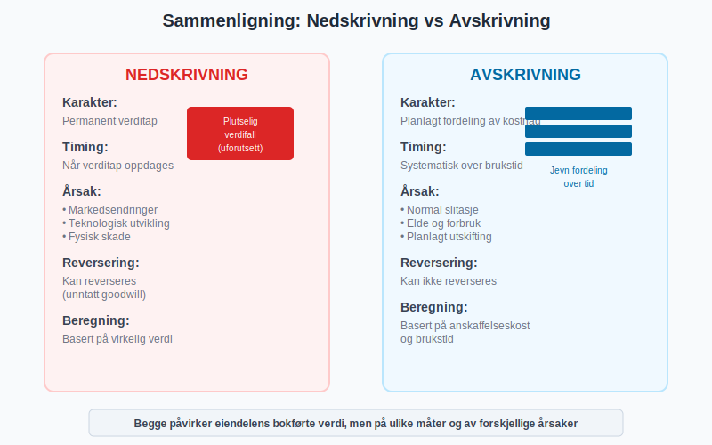
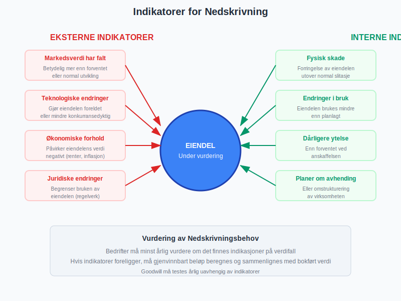
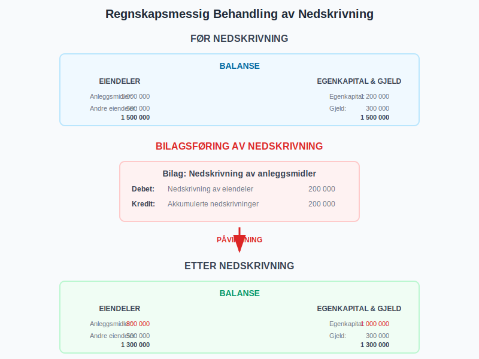
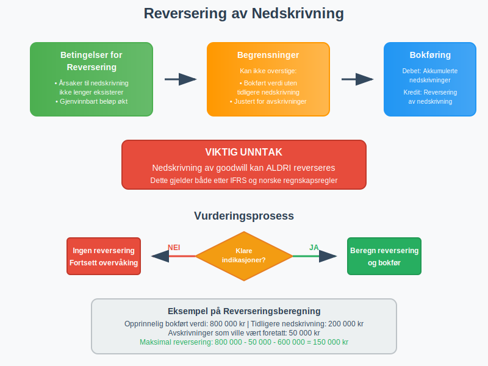
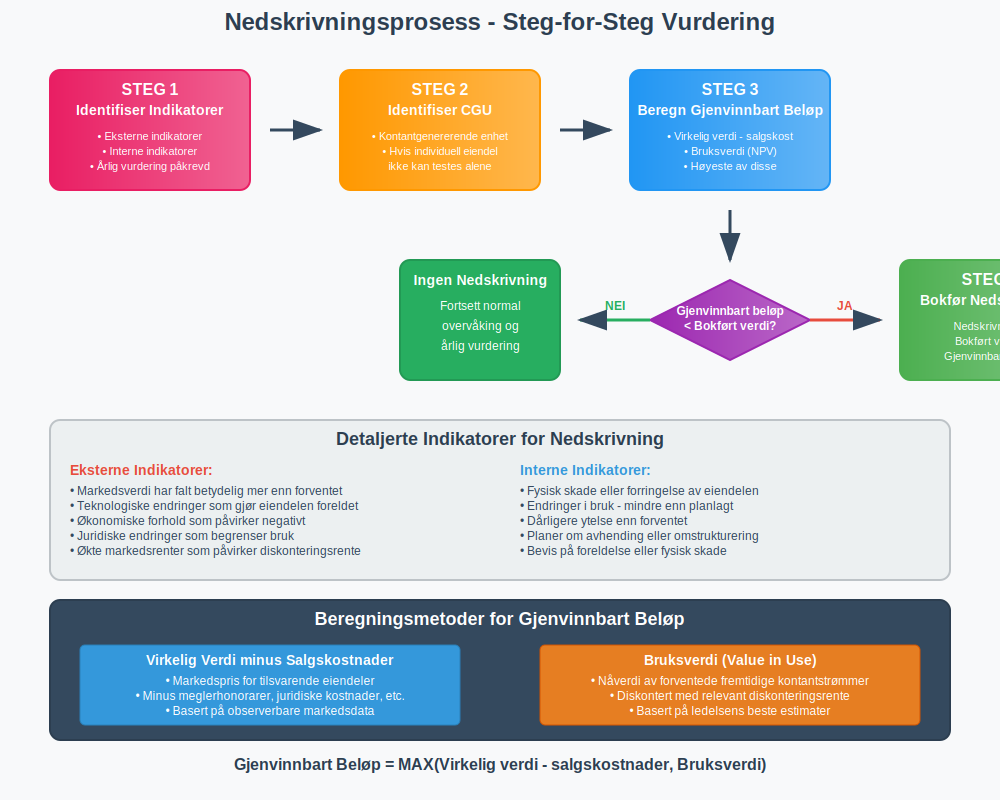
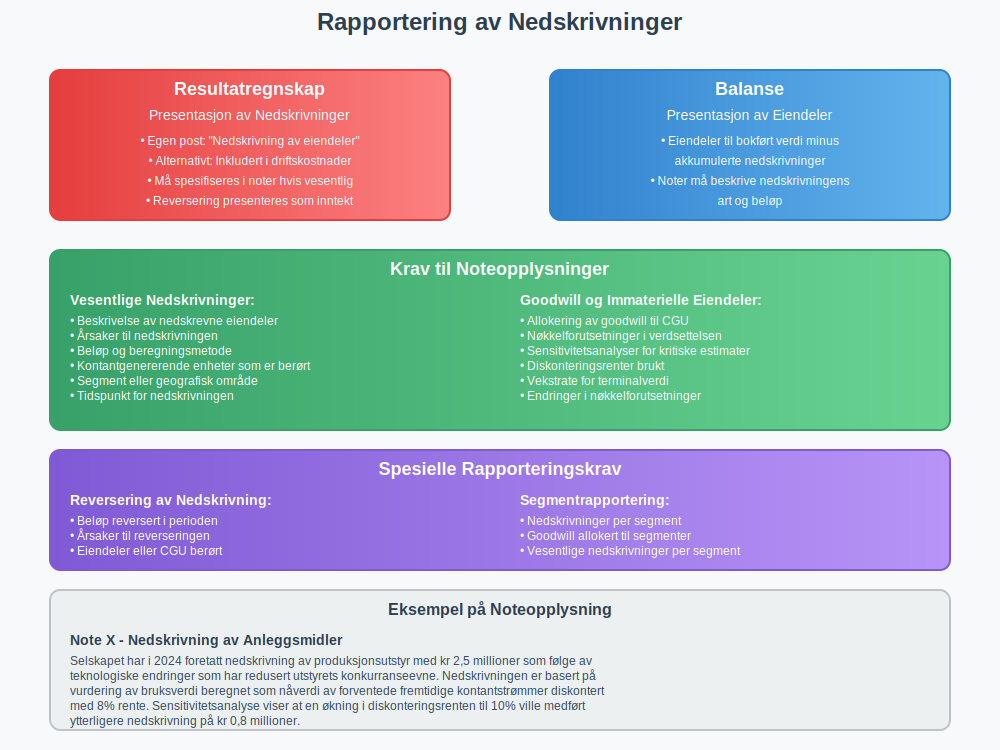

Nedskrivning er en regnskapsmessig reduksjon av en eiendels bokførte verdi når den virkelige verdien er lavere enn det som står i balansen. Dette er en permanent verdireduksjon som skiller seg fra ordinære avskrivninger.

Definisjon og Grunnleggende Prinsipper
Hva er Nedskrivning?
Nedskrivning oppstår når en eiendels gjenvinnbare beløp er lavere enn dens bokførte verdi. Det gjenvinnbare beløpet er det høyeste av:
- Virkelig verdi minus salgskostnader
- Bruksverdi (nåverdi av fremtidige kontantstrømmer)
Forskjell mellom Nedskrivning og Avskrivning

| Aspekt | Nedskrivning | Avskrivning |
|---|---|---|
| Karakter | Permanent verditap | Planlagt fordeling av kostnad |
| Timing | Når verditap oppdages | Systematisk over brukstid |
| Reversering | Kan reverseres (unntatt goodwill) | Kan ikke reverseres |
| Årsak | Markedsendringer, skade, teknologi | Normal slitasje og elde |
| Beregning | Basert på virkelig verdi | Basert på anskaffelseskost |
Når Skal Nedskrivning Gjennomføres?
Indikatorer på Verdifall
Eksterne Indikatorer
- Markedsverdi har falt betydelig mer enn forventet
- Teknologiske endringer som gjør eiendelen foreldet
- Økonomiske forhold som påvirker eiendelens verdi negativt
- Juridiske endringer som begrenser bruken av eiendelen
Interne Indikatorer
- Fysisk skade eller forringelse av eiendelen
- Endringer i bruk - eiendelen brukes mindre enn planlagt
- Dårligere ytelse enn forventet
- Planer om avhending eller omstrukturering

Regelmessig Vurdering
Bedrifter må minst årlig vurdere om det finnes indikasjoner på verdifall for:
- Anleggsmidler
- Immaterielle eiendeler
- Goodwill
- Investeringer i datterselskaper
Beregning av Nedskrivning
Grunnleggende Formel
Nedskrivning = Bokført verdi - Gjenvinnbart beløp
Steg-for-Steg Prosess
Steg 1: Identifiser Kontantgenererende Enhet
Hvis en individuell eiendel ikke kan generere uavhengige kontantstrømmer, må nedskrivning vurderes på nivået av den kontantgenererende enheten (CGU).
Steg 2: Beregn Gjenvinnbart Beløp
Det gjenvinnbare beløpet er det høyeste av:
Virkelig verdi minus salgskostnader:
- Markedspris for tilsvarende eiendeler
- Minus kostnader ved salg (meglerhonorarer, juridiske kostnader, etc.)
Bruksverdi:
- Nåverdi av forventede fremtidige kontantstrømmer
- Diskontert med relevant diskonteringsrente

Steg 3: Sammenlign med Bokført Verdi
Hvis gjenvinnbart beløp < bokført verdi → Nedskrivning kreves
Praktisk Eksempel
Situasjon: En produksjonsmaskin har følgende verdier:
- Bokført verdi: 800 000 kr
- Virkelig verdi: 650 000 kr
- Salgskostnader: 50 000 kr
- Bruksverdi: 580 000 kr
Beregning:
- Virkelig verdi minus salgskostnader: 650 000 - 50 000 = 600 000 kr
- Bruksverdi: 580 000 kr
- Gjenvinnbart beløp: max(600 000, 580 000) = 600 000 kr
- Nedskrivning: 800 000 - 600 000 = 200 000 kr
Regnskapsmessig Behandling
Bokføring av Nedskrivning
Ordinære Eiendeler
Debet: Nedskrivning av eiendeler 200 000
Kredit: Akkumulerte nedskrivninger 200 000
Oppskrevne Eiendeler
Hvis eiendelen tidligere er oppskrevet, reduseres først oppskrivningsreserven:
Debet: Oppskrivningsreserve 100 000
Debet: Nedskrivning av eiendeler 100 000
Kredit: Akkumulerte nedskrivninger 200 000

Presentasjon i Regnskapet
Resultatregnskap
- Nedskrivninger presenteres som egen post eller inkludert i driftskostnader
- Må spesifiseres i noter hvis beløpet er vesentlig
Balanse
- Eiendeler vises til bokført verdi minus akkumulerte nedskrivninger
- Noter må beskrive nedskrivningens art og beløp
Skattemessige Forhold
Fradragsrett
- Regnskapsmessige nedskrivninger gir ikke automatisk skattefradrag
- Realiserte tap ved salg gir fradrag
- Midlertidige forskjeller oppstår mellom regnskaps- og skattemessig verdi
Saldogrupper
For skattemessige formål følger nedskrivninger reglene for avskrivninger i relevante saldogrupper.
Reversering av Nedskrivning
Når Kan Nedskrivning Reverseres?
Nedskrivning kan reverseres hvis det er klare indikasjoner på at:
- Årsakene til nedskrivningen ikke lenger eksisterer
- Eiendelens gjenvinnbare beløp har økt
Viktig unntak: Nedskrivning av goodwill kan aldri reverseres.
Begrensninger ved Reversering
Reversering kan ikke overstige:
- Bokført verdi eiendelen ville hatt uten tidligere nedskrivning
- Justert for avskrivninger som ville vært foretatt
Bokføring av Reversering
Debet: Akkumulerte nedskrivninger 150 000
Kredit: Reversering av nedskrivning 150 000

Spesielle Situasjoner
Nedskrivning av Goodwill
Årlig Test
- Goodwill må testes for verdifall minst årlig
- Testen gjøres på nivået av kontantgenererende enheter
- Nedskrivning kan ikke reverseres
Allokering av Nedskrivning
Når en kontantgenererende enhet skal skrives ned:
- Goodwill skrives ned først
- Andre eiendeler skrives ned forholdsmessig
Nedskrivning av Finansielle Eiendeler
Utlån og Fordringer
- Nedskrivning basert på forventet kredittap
- Tapsavsetninger bokføres mot kundefordringer
Investeringer
- Børsnoterte aksjer: Nedskrivning når verdifall er betydelig eller langvarig
- Ikke-børsnoterte investeringer: Basert på vurdering av underliggende verdier

Bransjespesifikke Forhold
Eiendom og Utvikling
Utviklingsprosjekter
- Tomter og byggeprosjekter vurderes mot markedsverdi
- Nedskrivning når prosjektkostnader overstiger forventet salgsverdi
Utleieeiendommer
- Vurderes mot virkelig verdi eller gjenvinnbart beløp
- Markedsendringer kan utløse nedskrivning
Industri og Produksjon
Produksjonsutstyr
- Teknologisk utvikling kan gjøre utstyr foreldet
- Kapasitetsutnyttelse påvirker bruksverdi
Lagerbeholdning
- Lagerbeholdning nedskrives til netto realisasjonsverdi
- Inkluderer foreldede eller skadede varer
Olje og Gass
Leteaktiviteter
- Letekostnader nedskrives hvis ikke kommersielt funn
- Produksjonsanlegg vurderes mot fremtidige oljeinntekter
Internasjonale Regnskapsregler
IFRS vs. Norske Regler
| Aspekt | IFRS (IAS 36) | Norske Regler (NRS) |
|---|---|---|
| Testfrekvens | Årlig for goodwill | Når indikasjoner foreligger |
| Reversering | Tillatt (unntatt goodwill) | Tillatt med begrensninger |
| Diskonteringsrente | Spesifikke krav | Mer fleksibel tilnærming |
| Kontantgenererende enheter | Detaljerte regler | Enklere tilnærming |
Overgang til IFRS
Bedrifter som går over til IFRS må:
- Revurdere alle tidligere nedskrivninger
- Justere åpningsbalansen
- Dokumentere endringer i regnskapsprinsipper

Praktiske Utfordringer
Verdsettelse og Estimater
Usikkerhet i Beregninger
- Fremtidige kontantstrømmer er usikre
- Diskonteringsrenter kan variere
- Markedsverdier kan være vanskelige å fastslå
Profesjonell Vurdering
- Verdsettelsesspesialister kan være nødvendig
- Revisor må vurdere estimatenes rimelighet
- Sensitivitetsanalyser anbefales
Timing og Dokumentasjon
Når Skal Nedskrivning Bokføres?
- Så snart verdifall er identifisert
- Ikke vente til årsslutt hvis verdifall er klart
- Dokumentere beslutningsgrunnlaget
Krav til Dokumentasjon
- Beregninger og forutsetninger
- Markedsanalyser og verdsettelser
- Beslutningsprosess og godkjenninger

Kontroll og Revisjon
Internkontroll
Rutiner for Identifikasjon
- Regelmessige vurderinger av eiendelers verdi
- Overvåking av markedsforhold og indikatorer
- Rapportering av potensielle verdifall
Godkjenningsprosess
- Ledelsens vurdering av nedskrivningsbehov
- Styrets godkjenning for vesentlige nedskrivninger
- Dokumentasjon av beslutningsgrunnlag
Revisjon av Nedskrivninger
Revisorens Ansvar
- Vurdere ledelsens identifikasjon av nedskrivningsbehov
- Teste beregninger og forutsetninger
- Evaluere dokumentasjon og beslutningsprosess
Vanlige Revisjonshandlinger
- Sensitivitetsanalyser av nøkkelforutsetninger
- Sammenligning med markedsdata
- Vurdering av tidligere estimaters nøyaktighet
Rapportering og Noteopplysninger
Krav til Noteopplysninger
Vesentlige Nedskrivninger
Noter må inneholde:
- Beskrivelse av nedskrevne eiendeler
- Årsaker til nedskrivningen
- Beløp og beregningsmetode
- Kontantgenererende enheter som er berørt
Goodwill og Immaterielle Eiendeler
Spesielle krav til:
- Allokering av goodwill til kontantgenererende enheter
- Nøkkelforutsetninger i verdsettelsen
- Sensitivitetsanalyser for kritiske estimater
Eksempel på Noteopplysning
Note X - Nedskrivning av Anleggsmidler
Selskapet har i 2024 foretatt nedskrivning av produksjonsutstyr med kr 2,5 millioner som følge av teknologiske endringer som har redusert utstyrets konkurranseevne. Nedskrivningen er basert på vurdering av bruksverdi beregnet som nåverdi av forventede fremtidige kontantstrømmer diskontert med 8% rente.

Fremtidige Utviklingstrekk
Digitalisering og Automatisering
AI og Maskinlæring
- Automatisk identifikasjon av nedskrivningsindikatorer
- Prediktive modeller for verdsettelse
- Kontinuerlig overvåking av eiendelers verdi
Sanntidsdata
- Markedsdata oppdateres kontinuerlig
- Automatiske varsler ved verdifall
- Integrerte systemer for raskere rapportering
Regulatoriske Endringer
Bærekraftsrapportering
- Klimarisiko påvirker eiendelers verdi
- ESG-faktorer inkluderes i verdsettelser
- Stranded assets får økt oppmerksomhet
Harmonisering av Regler
- Konvergens mellom nasjonale og internasjonale regler
- Forenkling av komplekse bestemmelser
- Økt fokus på sammenlignbarhet
Konklusjon
Nedskrivning er et viktig regnskapsprinsipp som sikrer at eiendeler ikke er overvurdert i balansen. Korrekt håndtering av nedskrivninger krever:
- Systematisk overvåking av indikatorer på verdifall
- Grundige verdsettelser basert på markedsdata og fremtidige kontantstrømmer
- Korrekt regnskapsmessig behandling i henhold til gjeldende regler
- Tilstrekkelig dokumentasjon og noteopplysninger
Forskjellen fra ordinære avskrivninger er at nedskrivning reflekterer permanente verdifall som ikke var forventet ved anskaffelsen. Dette gjør nedskrivning til et viktig verktøy for å opprettholde regnskapets relevans og pålitelighet.
Profesjonell rådgivning anbefales for komplekse nedskrivningsvurderinger, særlig når det gjelder verdsettelse av goodwill og andre immaterielle eiendeler. God internkontroll og regelmessige vurderinger sikrer at nedskrivninger identifiseres og behandles korrekt i henhold til god regnskapsskikk.